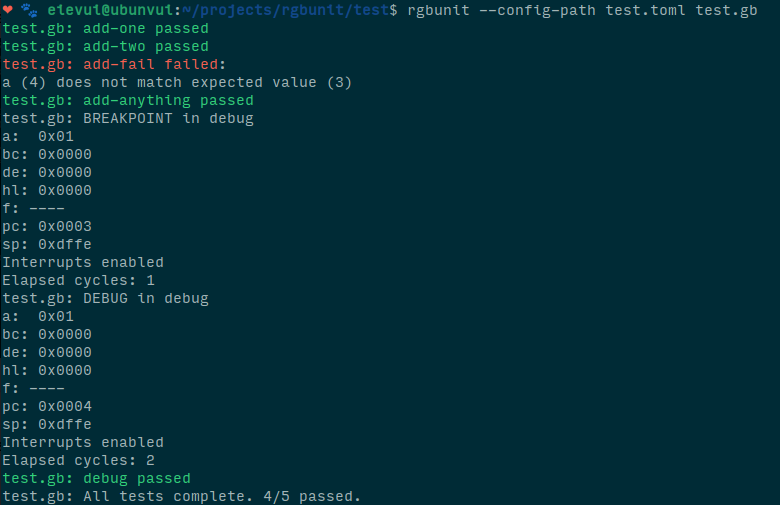

Here are some of the projects I've done!
A Game Boy "Mystery Dungeon" engine, making extensive use of the console's limited video capabilities. Features 8 independant entities which each have a unique color palette and set of graphics, procedurally generated levels, a powerful variable-width-font engine which makes text compact and easy to read, and a custom scripting language created from scratch for this project, evscript.
A simple yet versatile programming language originally made for the Game Boy. Intended to replace the macro based scripting languages often used in assembly projects, evscript provides control flow structures, variable declarations and operators, and compact bytecode output which saves space compared to C or even some assembly code.
A unit testing program for Game Boy ROMs. Configure tests using TOML files and instantly execute them with the built-in CPU emulator.

My first project on the Game Boy, Kirby's Dream Land DX is a romhack which adds Game Boy Color support to the original game.
An extensible Game Boy engine written entirely in RGBASM/SM83 assembly, with two macro-based scripting languages for programming events and enemies.
Oh, and this website!